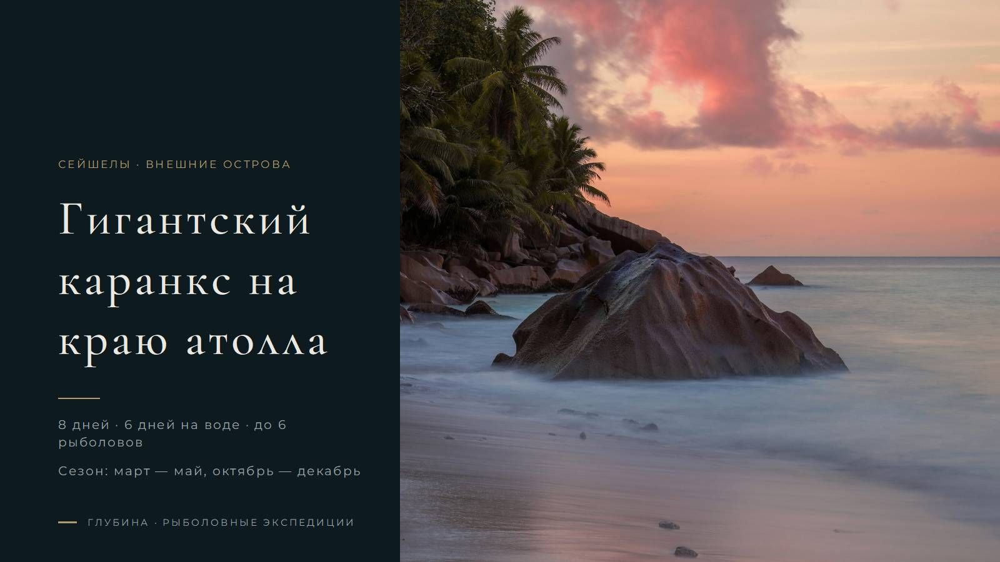
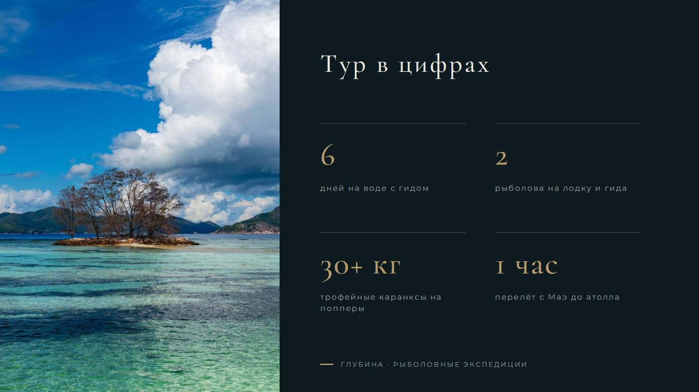
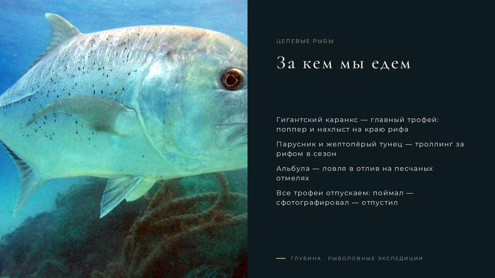
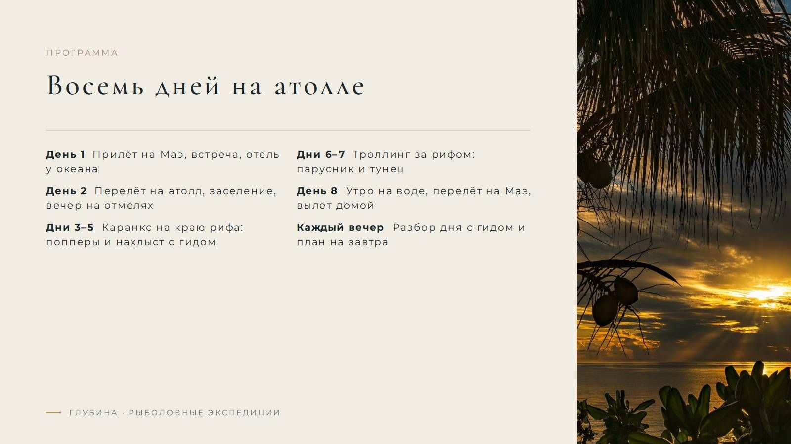
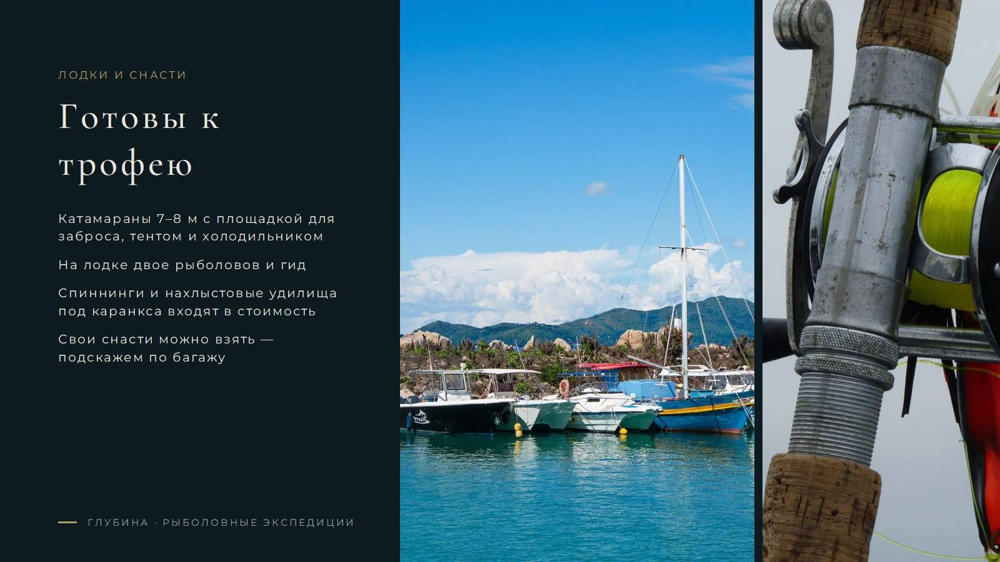
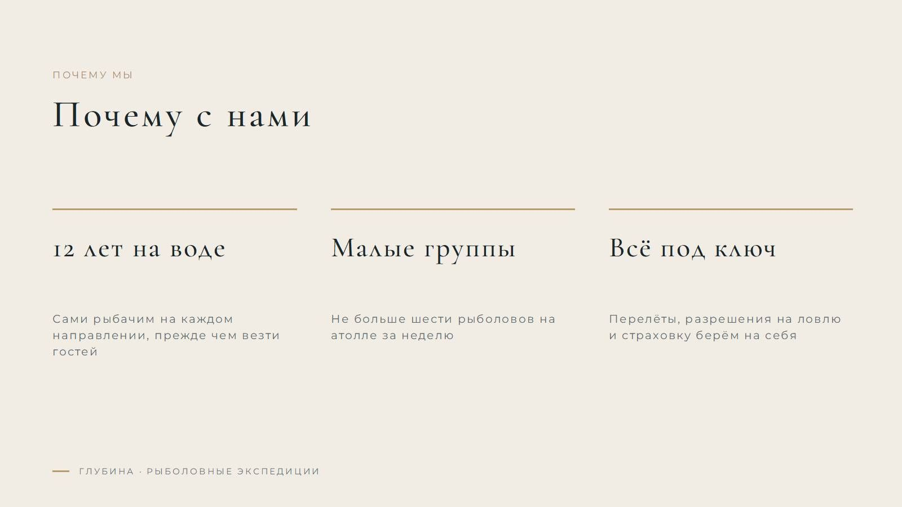
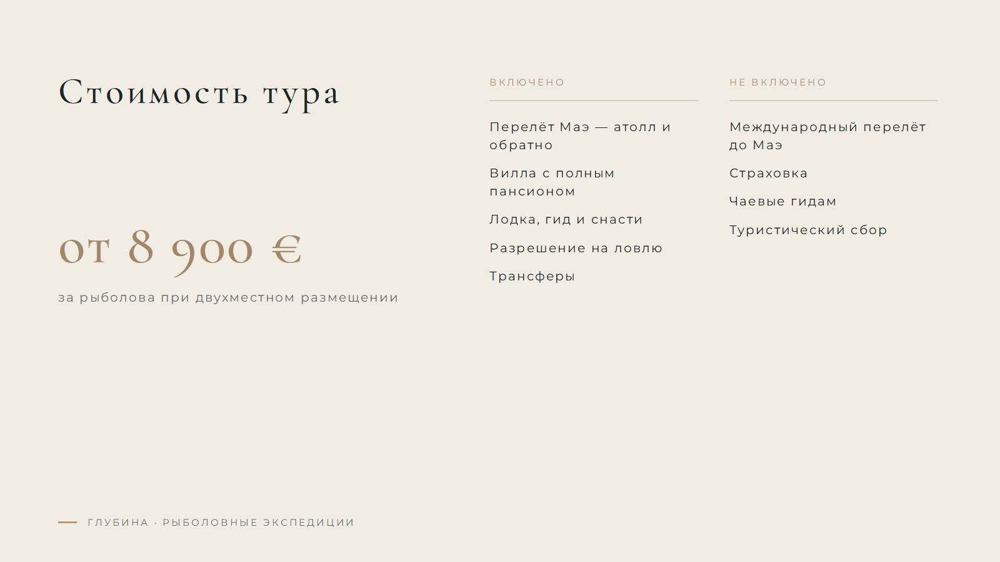
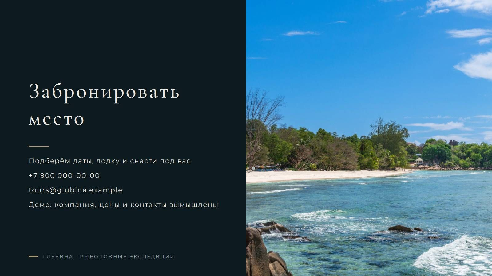
1 / 8Все слайды собраны из макетов шаблона. Новый тур — «Создать слайд», выбрать макет, вписать текст. Вёрстка не съезжает.
Места под фото — специальные поля: щёлкнули значок, выбрали снимок, он сам обрезается по рамке. Любое фото без ручной подгонки.
Cormorant Garamond и Montserrat из Google Fonts с кириллицей — файл так же выглядит в Google Slides. Весь текст редактируется.
9 макетов шаблона
Так выглядит пустой шаблон: рамками показаны поля для текста и места под фото.
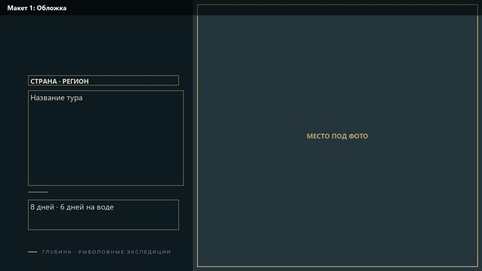
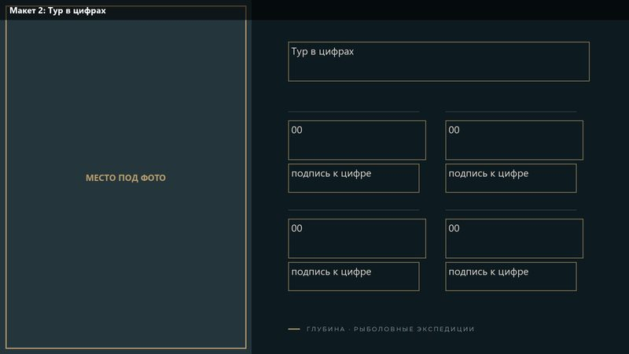
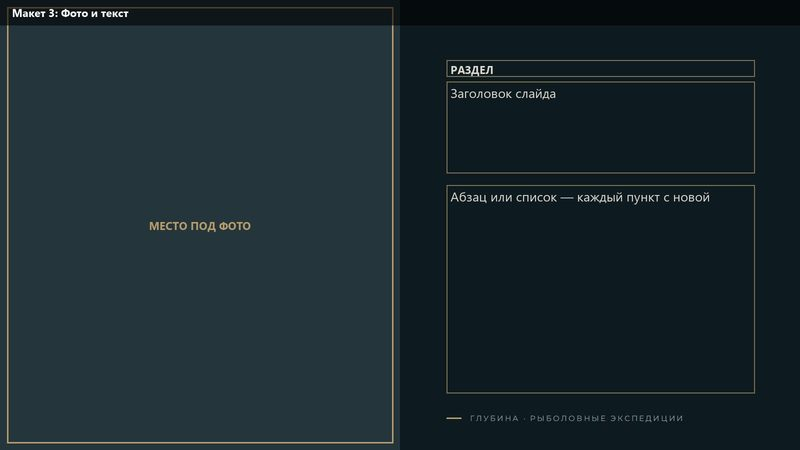
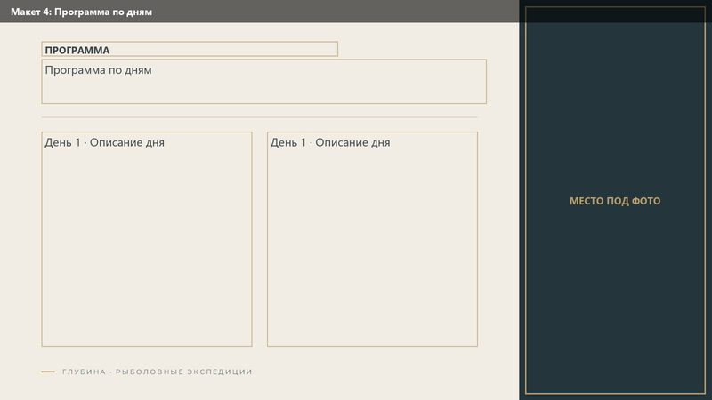
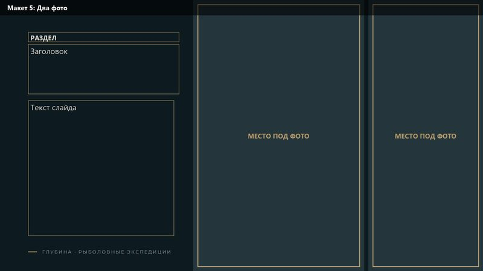
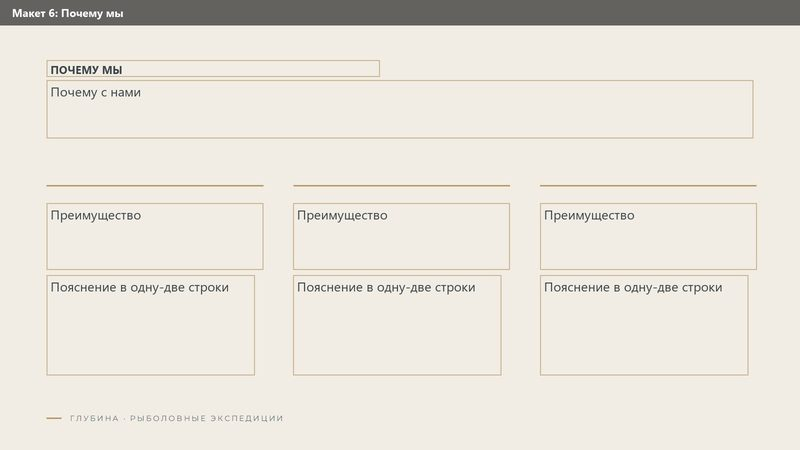
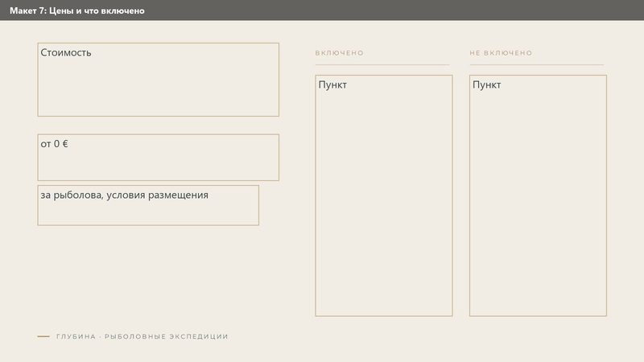
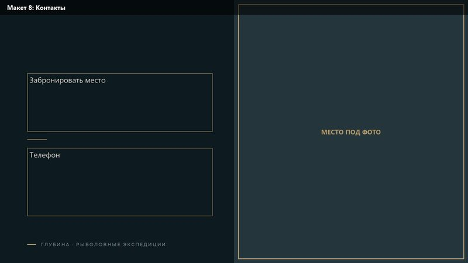
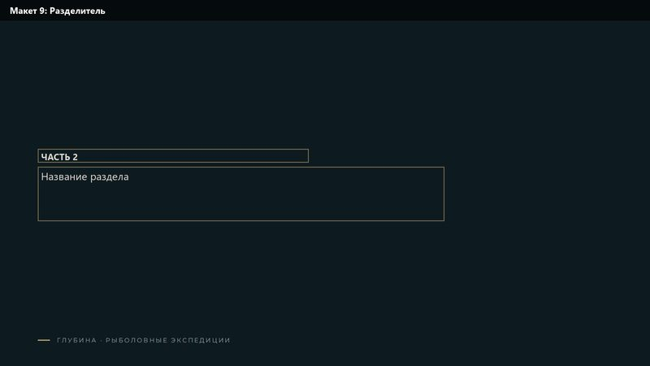
Как собрать презентацию нового тура
- Откройте шаблон и сохраните копию под названием тура.
- «Главная» → «Создать слайд» → выберите нужный макет. В Google Slides: «Слайд» → «Применить макет».
- Щёлкните по тексту-подсказке и впишите свой. Размер и цвет шрифта менять не нужно — они заданы в шаблоне.
- Щёлкните значок в месте под фото и выберите снимок. Чтобы сдвинуть кадр — «Обрезка» и перетащите фото.
- Если дней в программе больше — дублируйте слайд программы. Готово: «Файл» → «Экспорт» → PDF для отправки клиенту.
Фото: Giles Laurent (обложка), NorbertNagel (острова, закат, марина, пляж) — CC BY-SA 4.0; Dr. Dwayne Meadows, NOAA — общественное достояние; Seabee314 — CC0. Все снимки — Wikimedia Commons. Авторы указаны и в заметках к слайдам.